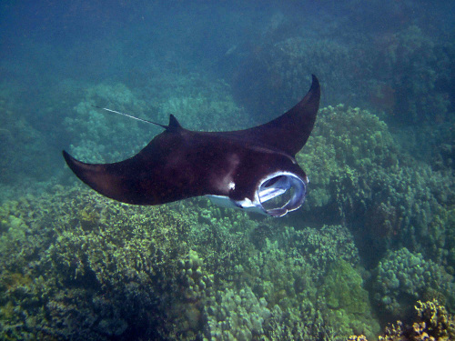

Vamos explorar alguns dos fascinantes animais que vivem no aquário marinho!
Tubarão
Os tubarões são peixes cartilaginosos conhecidos por sua força e agilidade. Eles são predadores no topo da cadeia alimentar marinha e desempenham um papel crucial na manutenção do equilíbrio dos ecossistemas oceânicos.
Raia

As raias são peixes cartilaginosos relacionados aos tubarões. Elas possuem um corpo achatado e nadadeiras peitorais que se estendem como asas. As raias são encontradas em águas costeiras e oceânicas ao redor do mundo.
Cavalo-Marinho
Os cavalos-marinhos são peixes pequenos e únicos, conhecidos por sua aparência distinta que se assemelha a um cavalo. Eles são encontrados em águas rasas e quentes, geralmente em recifes de corais e vegetação marinha.
Axolote
O axolote é um anfíbio neotênico, o que significa que ele mantém características larvais durante toda a sua vida. Eles são conhecidos por sua capacidade de regenerar membros e outros tecidos do corpo. Os axolotes são encontrados principalmente em lagos e canais no México.
Foca
As focas são mamíferos marinhos adaptados para a vida na água. Elas possuem um corpo hidrodinâmico e nadadeiras que as ajudam a nadar com eficiência. As focas são encontradas em várias regiões do mundo, desde águas frias até tropicais.
Polvo
Os polvos são moluscos marinhos conhecidos por sua inteligência e habilidades de camuflagem. Eles possuem oito braços flexíveis e são capazes de se espremer em espaços muito pequenos. Os polvos são encontrados em diversos habitats marinhos ao redor do mundo.
Pinguim
Os pinguins são aves marinhas que não voam, mas são excelentes nadadores. Eles possuem um corpo adaptado para a vida aquática, com asas que funcionam como nadadeiras. Os pinguins são encontrados principalmente no hemisfério sul, especialmente na Antártida.